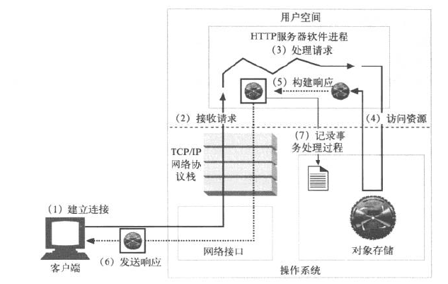
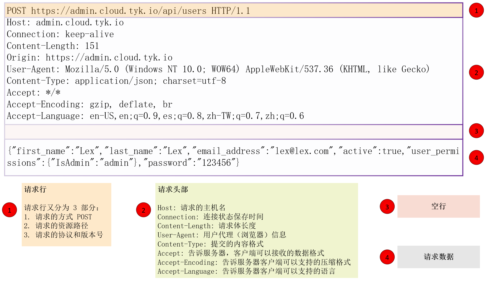

目录
1. 账号系统 API 功能简介
技术雷达

业务功能
小册构建了一个账号系统apiserver，功能如下：
- API 服务器状态检查
- 登录用户
- 新增用户
- 删除用户
- 更新用户
- 获取指定用户的详细信息
- 获取用户列表
运行环境
CentOS 7.5.1804
2. RESTful API 简介
要实现一个 API 服务器，首先要考虑两个方面：API 风格和媒体类型。Go 语言中常用的 API 风格是RPC和REST，常用的媒体类型是JSON、XML和Protobuf。在 Go API 开发中常用的组合是gRPC + Protobuf和REST + JSON。
REST 简介
REST 代表表现层状态转移（REpresentational State Transfer），是一种软件架构风格，不是技术框架。
REST 有一系列规范，满足这些规范的 API 均可称为 RESTful API，核心规范如下：
- REST 中一切实体都被抽象成资源，每个资源有一个唯一的标识
URI，所有行为都应该是在资源上的CRUD操作 - 使用标准的方法来更改资源的状态，常见的操作有：资源的增删改查操作
- 无状态：这里的无状态是指每个
RESTful API请求都包含了所有足够完成本次操作的信息，服务端无需保持 Session
无状态对于服务端的弹性扩容来说至关重要
在实际开发中，REST 由于天生和 HTTP 协议相辅相成，因此 HTTP 协议已经成为实现 RESTful API 的事实标准。在 HTTP 协议中通过POST、DELETE、PUT、GET方法来对应 REST 资源的CRUD操作，具体对应关系如下：
| HTTP 方法 | 行为 | URI | 示例说明 |
|---|---|---|---|
| GET | 获取资源列表 | /users | 获取用户列表 |
| GET | 获取一个具体的资源 | /users/admin | 获取 admin 用户的详细信息 |
| POST | 创建一个新的资源 | /users | 创建一个新用户 |
| PUT | 以整体的方式更新一个资源 | /users/1 | 更新 id 为 1 的用户 |
| DELETE | 删除服务器上的一个资源 | /users/1 | 删除 id 为 1 的用户 |
RPC 简介
远程过程调用（Remote Procedure Call，RPC）是一个计算机通信协议，它允许运行于一台计算机的程序调用另一台计算机的子程序，而程序员无需额外为这个交互操作编程。
RPC 的调用过程如下：

Client通过本地调用，调用Client StubClient Stub将参数打包（也叫序列化Marshalling）成一个消息，然后发送这个消息Client所在的 OS 将消息发送给ServerServer端接收到消息后，将消息传递给Server StubServer Stub将消息解包（也叫反序列化Unmarshalling）得到参数Server Stub调用服务端的子程序（函数），处理完后，将最终结果按照相反的步骤返回给Client
REST vs RPC
RPC 相比于 REST 的优点主要有以下三点：
RPC+Protobuf采用 TCP 做传输协议，而REST直接使用 HTTP 做应用层协议，导致REST在调用性能上会比RPC+Protobuf低- 对于一些很难抽象成资源的操作例如登录操作，在实际开发中并不能严格按照
REST规范编写 API，而RPC就不存在这个问题 RPC屏蔽网络细节、易用，和本地调用类似
而 REST 相比于 RPC 也有很多优势：
REST轻量级，简单易用，维护性和扩展性都比较好REST只要语言支持 HTTP 协议就可以对接，更适合对外。而RPC会有语言限制，不同语言的RPC调用起来很麻烦JSON格式可读性更强，开发调试都很方便- 如果严格按照
REST规范来编写 API，那么最终 API 看起来会更加清晰，更容易被其他人理解
媒体类型选择
选择JSON。
3. API 流程和代码结构
HTTP API 服务器启动流程

HTTP API 服务器启动流程
HTTP 请求处理流程

一次完整的 HTTP 请求处理流程
HTTP 请求和响应格式介绍

HTTP 请求报文 的一般格式
- 第一行必须是一个请求行
request line，用来说明请求类型、要访问的资源以及所使用的 HTTP 版本 - 紧接着是一个头部
header小节，用来说明服务器要使用的附加信息 - 之后是一个空行
- 再后面即为主体
body，可以添加任意的其他数据
HTTP 响应格式与请求格式类似，也是由四部分组成：状态行、消息报头、空行和响应数据
目录结构
├── admin.sh # 进程的start|stop|status|restart控制文件
├── conf # 配置文件统一存放目录
│ ├── config.yaml # 配置文件
│ ├── server.crt # TLS配置文件
│ └── server.key
├── config # 专门用来处理配置和配置文件的Go package
│ └── config.go
├── db.sql # 在部署新环境时，可以登录MySQL客户端，执行source db.sql创建数据库和表
├── docs # swagger文档，执行 swag init 生成的
│ ├── docs.go
│ └── swagger
│ ├── swagger.json
│ └── swagger.yaml
├── handler # 类似MVC架构中的C，用来读取输入，并将处理流程转发给实际的处理函数，最后返回结果
│ ├── handler.go
│ ├── sd # 健康检查handler
│ │ └── check.go
│ └── user # 核心：用户业务逻辑handler
│ ├── create.go # 新增用户
│ ├── delete.go # 删除用户
│ ├── get.go # 获取指定的用户信息
│ ├── list.go # 查询用户列表
│ ├── login.go # 用户登录
│ ├── update.go # 更新用户
│ └── user.go # 存放用户handler公用的函数、结构体等
├── main.go # Go程序唯一入口
├── Makefile # Makefile文件，一般大型软件系统都是采用make来作为编译工具
├── model # 数据库相关的操作统一放在这里，包括数据库初始化和对表的增删改查
│ ├── init.go # 初始化和连接数据库
│ ├── model.go # 存放一些公用的go struct
│ └── user.go # 用户相关的数据库CURD操作
├── pkg # 引用的包
│ ├── auth # 认证包
│ │ └── auth.go
│ ├── constvar # 常量统一存放位置
│ │ └── constvar.go
│ ├── errno # 错误码存放位置
│ │ ├── code.go
│ │ └── errno.go
│ ├── token
│ │ └── token.go
│ └── version # 版本包
│ ├── base.go
│ ├── doc.go
│ └── version.go
├── README.md # API目录README
├── router # 路由相关处理
│ ├── middleware # API服务器用的是Gin Web框架，Gin中间件存放位置
│ │ ├── auth.go
│ │ ├── header.go
│ │ ├── logging.go
│ │ └── requestid.go
│ └── router.go
├── service # 实际业务处理函数存放位置
│ └── service.go
├── util # 工具类函数存放目录
│ ├── util.go
│ └── util_test.go
└── vendor # vendor目录用来管理依赖包
├── github.com
├── golang.org
├── gopkg.in
└── vendor.json
参考文章
- 《基于 Go 语言构建企业级的 RESTful API 服务》| 掘金小册
- 教程：使用 go 的 gin 和 gorm 框架来构建 RESTful API 微服务 | LearnKu
- Build RESTful API service in golang using gin-gonic framework | Medium
- 对比 RESTful 与 SOAP，深入理解 RESTful | 紫川秀的博客
- RESTful API 设计规范 | 紫川秀的博客
- 如何使用 swagger 设计出漂亮的 RESTful API | 紫川秀的博客
- Go 学习笔记 (六) - 使用 swaggo 自动生成 Restful API 文档 | Razeen’s Blog
- Gin - 高性能 Golang Web 框架的介绍和使用 | 代码成诗